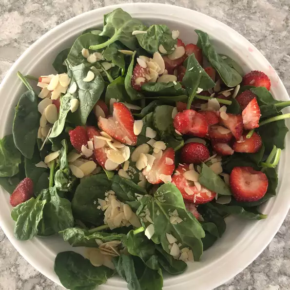

Jörð's salad
Main page

If Jörð managed to feed this to Thor, you can feed it to your toddlers.
Ingredients:
- 2 bunches spinach, rinsed and torn into bite-size pieces
- 4 cups sliced strawberries
- ½ cup vegetable oil
- ¼ cup white wine vinegar
- cup white sugar
- ¼ teaspoon paprika
- 2 tablespoons sesame seeds
- 1 tablespoon poppy seeds
Steps:
- In a large bowl, toss together the spinach and strawberries.
- In a medium bowl, whisk together the oil, vinegar, sugar, paprika, sesame seeds, and poppy seeds. Pour over the spinach and strawberries, and toss to coat.